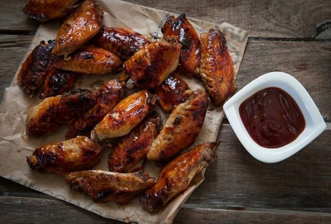

These wings are a hit at every party.
These wings bittersweet are so delicious that nothing will be left.
Enjoy!
Whisk together the water, soy sauce, sugar, pineaple juice, vegetable oil, garlic, and
inger in a large glass or ceramic bowl until the sugar has dissolved. Add the chicken
wings, coat with the marinade, cover the bowl with plastic wrap and marinate in the refrigerator
for at least 1hour
Preheat an oven to 350 degrees F (175 degrees C). Grease baking dishes, and set
aside
remove the chicken from the marinade, and shake off excess and place the chicken
wings into the prepared baking dishes. Discard the remaining marinade. Bake the
wings in the preheated oven until the chicken is cooked through and the glaze is
evenly browned, about 1 hour.